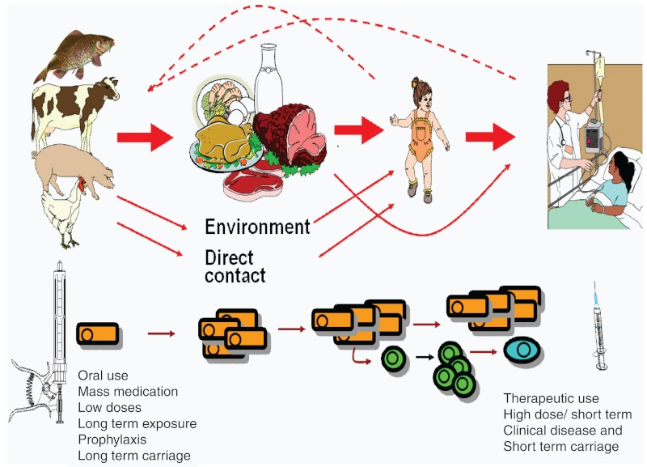
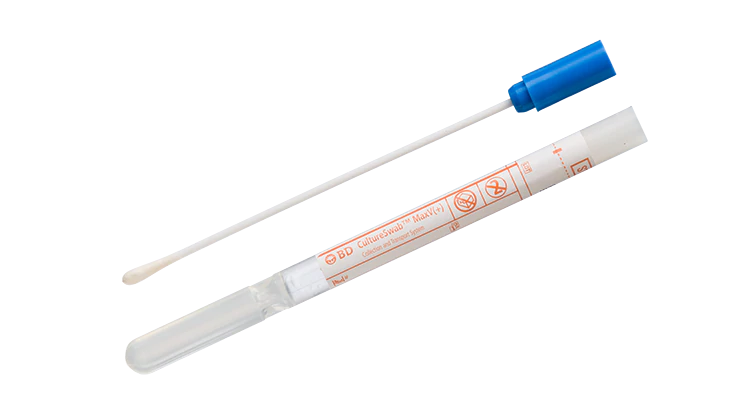
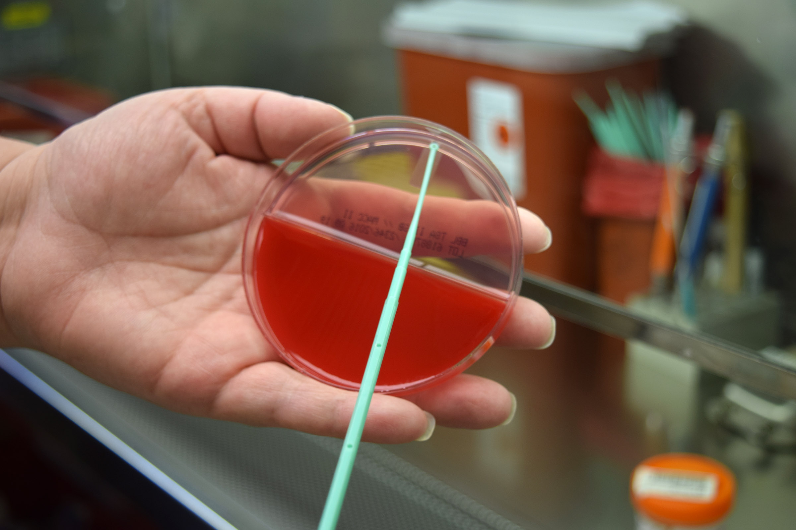
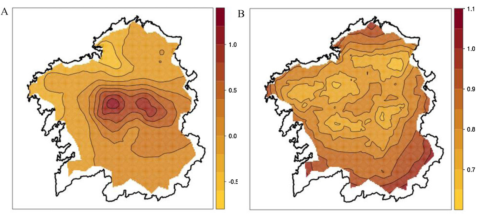

Main idea: proof-of-concept for a monitoring, surveillance network.
Integrates human & other species ecology.
Antibiotic multirresistance (AMR) mapping.
AMR prediction.
Ability to inform interventions aimed at reducing AMR.
Ability to change antibiotic policies across Europe.
AMR permanent surveillance.
ID: SC1-BHC-34-2020 - Specific Challenge:
Antimicrobial resistance represents a serious threat to public health in Europe and beyond.
Within the last decades resistance has increased considerably in many clinically important pathogenic bacteria.
Data collected by the European Centre for Disease Prevention and Control (ECDC)[1] shows that nowadays in several European countries prevalence levels of infections that can no longer be treated with last-line classes of antibiotics have reached levels where isolation measures may no longer be feasible.
ID: SC1-BHC-34-2020 - Specific Challenge:
In addition to this, prevalence levels of resistant infections are likely to increase in countries where currently such levels are relatively low. This may lead to an increasing number of outbreaks of resistant infections in these countries.
The challenge is to address this threat via a multi-disciplinary approach by developing suitable clinical management and infection prevention plans detailing how to deal with resistant bacterial infections in high prevalence settings.
ID: SC1-BHC-34-2020 - Specific Challenge:
The spread of AMR across borders has been recognised globally and improving knowledge on clinical management and infection prevention in high prevalence settings might also benefit other countries around the globe, including low and middle income countries and thereby diminish the spread of resistant bacteria.
This topic will contribute to the implementation of the EU One Health Action Plan against Antimicrobial Resistance[2].
Others outside human health
Work Programme: Food Security, Sustainable Agriculture and Forestry, Marine, Maritime and Inland Water Research and the Bioeconomy.

Different from simple resistance. >= 3 atb families
Many mechanisms
Plasmids: DNA strands with encoded resistance
Prion-like behaviour.
Useful concepts:
DNA strands. Can be left outside bacteria and survive in the environment.
Defensive. Not offensive. No pathogenic.
Bacteria get “infected” by them.
This Enhances their defensive phenotype.
But at a Cost: energy spent building, maintaining defensive proteins, pumping antibiotics…
Often this diminishes their offensive capabilities.
Produced and successfully transmitted under antibiotic pressure.
Released into environment, food.
Picked up by human gut bacteria. Naturalised. Eventual infections (gut, urinary) will be by AMR.
Produced and successfully transmitted under antibiotic pressure.
Released into environment, food.
Picked up by human gut bacteria. Naturalised. Eventual infections (gut, urinary) will be by AMR.
Gut tract swabs, cultured.
Inexpensive at scale. Non-invasive for humans and animals.
Already routine for selected human groups to monitor colonisation.
People starting to do it in other animals.
 
If we found a way to map plasmids:

If we found a way to predict plasmids:
If we found a way to establish monitoring networks:
Tasks for human, animal, environment.
Role of microbiology services.
Role of data modeling.
First: task over-development. Followed by pruning.
Routine anal swabs (RAS) in patients. Data already available.
Data collection from cultured swabs.
Random RAS sampling in outpatients. Sample is self-collected. Needs training by a nurse.
Random RAS sampling in healthy population.
Number of kits needed: [unknown].
Areas to sample: [unknown].
Receive and analyse all human samples.
As N is unknown, they cannot provide budget yet.
Depending on N, Microbiology workload could be shared.
Multiresistance mechanism not always available.
Multiresistance types: b-lactams, colistine, they will buy vancomycin plates (not vancomycin resistance in our area, but exists in Pontevedra).
They will issue an unified procedure for AMR analysis, for all Micro partners.
Routine anal swabs (RAS) in selected cattle populations. Involvement of Veterinary physician and/or others.
Data collection. People for data collection, curation and custody.
Receive and analyse all human samples.
As N is unknown, they cannot provide budget yet.
Meteorological conditions. Meteorological services or data specialist to get open data.
Soil and water samples from selected locations (samples at only one timepoint?). Involvement of person for soil samples retrieval, transport and culturing.
[Q: data granularity]
Database structure design.
Data description (interpretation by subject matter experts, eg Microbiologists from the project partnership).
Data modelling:
Action Plan Design, data informed:
Example: the problem of colistin resistance:
Web page.
Seminars, workshops in scientific contexts…
Workshops with medical and veterinary professionals on best practice.
Guidelines for antibiotic usage in humans and animals.
Advertisement. Possible ideas/concepts aimed to the general public:
Advertisement. Possible ideas/concepts aimed to farmers:
Prevalence and spatial distribution of AMR in [two/three] European areas.
Determine the importance of the different AMRs:
Quantify the transmission of the most important AMRs between animal and human populations via:
Predict the probability of a given AMR at a given location.
Design a series of (small scale) interventions to reduce important AMRs.
J. Snow identified the source of the outbreak as the public water pump on Broad Street.
Southwark and Vauxhall Waterworks Company was taking water from sewage-polluted sections of the Thames and delivering the water to homes.
After the outbreak, officials rejected Snow’s theory.
Human tasks are routine procedures, but at a bigger scale.
Animal and environment tasks pose higher risks.
Role of task pruning for risk mitigation.
Tasks can be simplified (not much) and de-scaled (less, worse data).
| Institution | Department | Interest | People | Tasks (brief) |
|---|---|---|---|---|
| SERGAS | Anaesthesiology and Critical Care | X | Aurora Baluja | Clinical data, colonisation info |
| X | Valentin Caruezo | Clinical data, colonisation info | ||
| Microbiology | X | Luisa Perez-Del Molino | Swab cultures, colonisation info | |
| Primary Care | ? | Daniel Rey-Aldana | Colonisation, healthy population | |
| Fundación Rof Codina | Research Unit | X | Natalia Miño | Animal data |
| Microbiology | ? | Jorge Blanco | Swab cultures | |
| P-investiga | X | Emilio Paredes-Galan | Centralised database | |
| CESGA | HPC-Hadoop platform | X | Javier Cacheiro | HPC, Big-data, GDPR |